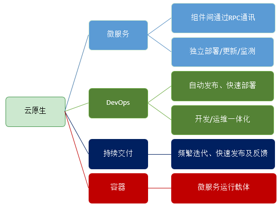
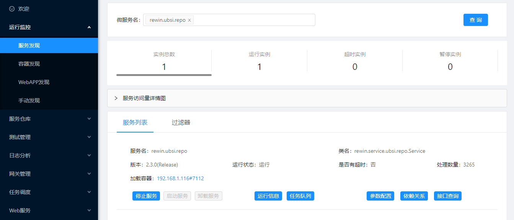
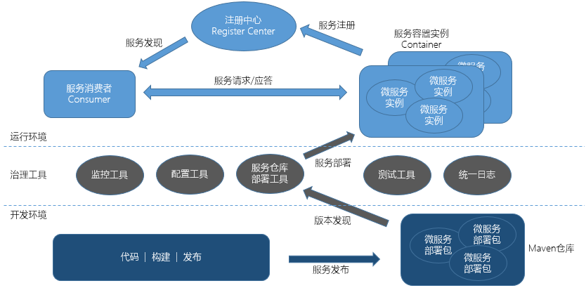
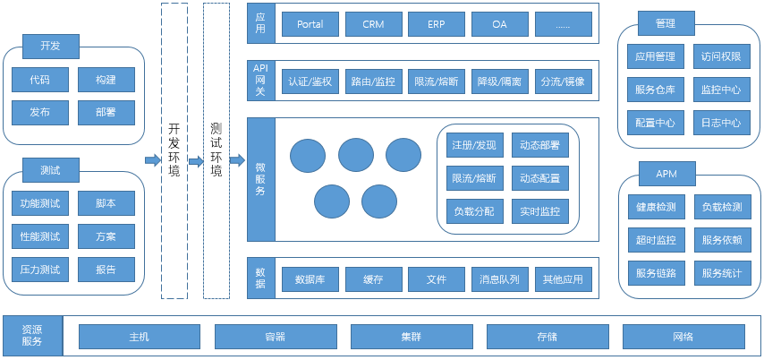

UBSI微服务架构概述
随着应用软件架构模式的不断迭代衍化，云原生的微服务架构已经越来越成为构建现代化应用系统的主流方法。
云原生是一种面向云环境的构建和运行应用的方法，云原生应用的基本特质：组件化、可观察、可独立部署/测试、可动态升级/替换、可配置管理等；云原生是一套技术体系和方法论，主要构成包括：微服务 + DevOps + 持续交付 + 容器。

说起微服务架构，就必须要提到SpringCloud。SpringCloud是目前最被广泛应用的微服务框架，由Netflix公司开发，在SpringBoot框架基础上，通过一系列扩展插件以及外围独立组件，构建出的一套相对完整的微服务开发/运行体系。
虽然SpringCloud已经被广泛采用，但仍存在不少问题：
- 低性能、高延迟：SpringCloud采用基于HTTP的restful-api作为通信协议，虽然能够获得较高的适用性，但在性能方面代价很大，并非高频的微服务之间RPC通讯的最佳选择
- 巨大的资源开销：每个微服务在独立运行时，都会带着自己的一套Spring运行框架(包括web容器，如Tomcat等)，框架占用的资源开销已经远远大于一个简单的微服务的开销；当系统中存在成百上千个微服务运行实例时，对于运行资源的需求是一个灾难
- 系统构成过于复杂，环境搭建/运维的成本高昂：为实现较为完整的微服务治理能力，SpringCloud的运行环境除了微服务本身之外，还需要大量的独立组件，包括注册中心、配置中心、流量控制、链路跟踪、监控工具、分布式日志、分布式事务等，这些都需要单独进行安装、配置和运维
- 缺乏一个统一的、高度集成的治理工具，除非进行二次开发或采用第三方的整合方案
- 缺乏服务自动部署以及生命周期管理的工具，必须依赖Docker和K8S
- 较高的学习成本，难以实现自主可控：开发人员需要深入学习从SpringBoot到SpringCloud的各种插件/组件的注解/API及工作机理，即便是已经非常熟悉的开源工具包(例如mybatis)，也需要再次了解Spring框架对其接口或配置参数进行的封装，这不仅仅对编码工作带来了更高的复杂度，对于测试、优化、系统环境迁移以及TroubleShooting等工作也造成了更加严峻的挑战
UBSI - 轻量级微服务架构平台
针对SpringCloud存在的这些问题，一个全新的轻量级微服务架构平台UBSI - Unified Basic Service Infrastruct应运而生。轻量级意味着更快、更简单、更易学易用，但并不意味着能力的缺失。对比SpringCloud，UBSI同样构建了一套完备的微服务开发/治理体系：
| SpringCloud | UBSI | |
|---|---|---|
| 注册中心 | Eureka、Consul、Nacos | Redis |
| 配置中心 | Spring Cloud Config、Apollo、Nacos | UBSI Repo服务仓库组件 |
| 流量控制 | Hystrix、Sentinel | UBSI Container服务容器 |
| 路由和负载均衡 | Ribbon、Loadbalancer | UBSI Consumer客户组件 |
| 链路跟踪/分布式日志 | Sleuth、SkyWalking | UBSI Logger日志服务组件 |
| API网关 | Spring Cloud Gateway、Zuul | UBSI Gateway网关组件 |
| API文档 | Swagger、Knife4j | UBSI Repo服务仓库组件 |
| 任务调度 | Spring Cloud Task | UBSI Scheduler任务调度组件 |
| 分布式事务 | Seata、TxLCN | UBSI Transaction分布式事务组件 |
| 自动化部署 | UBSI Repo服务仓库组件 | |
| 自动化测试 | UBSI Tester服务组件 | |
| 服务编排或流程 | UBSI Eventflow事件流程组件 | |
| 监控工具 | SpringBoot Admin | UBSI Admin治理工具 |
与SpringCloud体系不同，UBSI没有采用拼装或集成大量第三方组件的方式，而是从根本上就对微服务架构进行了一体化的设计，从而形成了一整套高度集成的架构方案。
除此之外，UBSI的优势还体现在：
更高性能、更低延迟：微服务之间的RPC通讯采用基于socket长连接的多路复用机制，并使用与语言无关的二进制数据编码，显著提升了通讯效率；在同样系统环境下的测试结果表明UBSI接口的响应效率在SpringBoot的5倍以上
更少的资源开销：UBSI架构的核心是提供了微服务的运行容器，与Docker容器不同，Docker是系统运行环境容器，可以运行任何应用；UBSI Container更类似于可以部署多个web应用的web容器（如Tomcat），多个不同微服务的运行实例可以部署在同一个UBSI Container中运行，这些实例可以共享容器提供的I/O连接池、工作线程池、过滤器（比如加密认证）等，这种机制可以极大降低微服务的运行资源开销
更简单的系统构成：除了采用Redis作为注册中心，以及Admin治理工具需要的Nginx/MongoDB之外，UBSI的运行环境不再需要其他的独立组件；在UBSI体系中，"一切都是微服务"：除了核心的Container/Consumer组件之外，几乎所有的治理能力都是通过UBSI的微服务来实现
一体化的集成治理工具：

不依赖Docker/K8S的微服务自动部署及生命周期管理能力：UBSI的微服务容器并不仅仅是一个微服务的运行容器，还通过"容器控制器"（这也是一个特殊的微服务，伴随容器运行）提供了对其他微服务的实例部署、测量监控、启/停/卸载等生命周期管理功能，同时容器还统一管理所有服务实例的注册、流量控制、访问控制及跟踪、请求统计及事务协调等，所以说UBSI不仅仅是一个微服务的开发框架，还是一个运行平台，是微服务应用的基础设施和技术底座
更低的学习成本、更高的开发效率
- 对于开发人员来说，只需要掌握基础的Java开发技能，并了解几个UBSI的服务注解，就能马上开始微服务的开发
- UBSI通过集成开发环境的Maven仓库，可以帮助搭建 "开发" -> "构建" -> "发布" -> "部署" 的流水线，能够有效提高微服务的开发迭代效率
- UBSI的服务仓库可以集中收录开发组织的工作成果，形成统一的服务目录和接口文档
- UBSI还为开发人员提供了一体化的测试及日志工具
UBSI的核心架构：

服务容器(UBSI Container)是UBSI平台的核心组件，容器是可以独立运行的节点，用来装载微服务的运行实例。容器为微服务提供了：
- 运行时的上下文环境
- 动态部署、启动、暂停、卸载等生命周期管理
- 向注册中心注册
- 处理数据通讯、并发调度、流量控制
- 向监控工具报告状态及计数
- 动态参数配置
每个容器可以部署多个微服务，同一个微服务可以部署在多个容器中，多个容器构成了UBSI的服务网格(Service Mesh)。
UBSI平台的整体架构：

UBSI可以帮助构建复杂的分布式应用系统或技术/业务中台，满足高性能、易扩展、高可用、易治理等要求，支持快速开发及可持续交付。